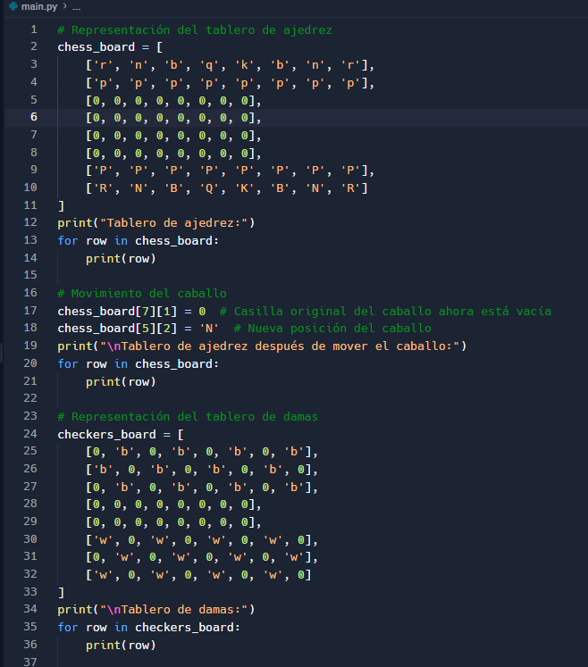
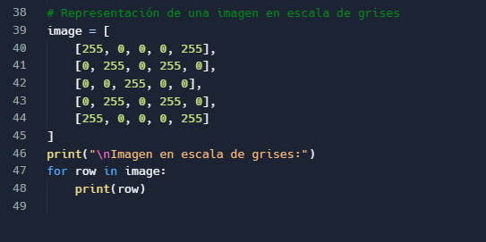

Integrante: Alejandro Caicedo
Tableros de Juego y Matrices
Este proyecto presenta el uso de matrices para representar tableros de ajedrez, damas y una imagen en escala de grises.
Link al Documento de Google Drive:
Acceder al documento
Imágenes Representativas:

